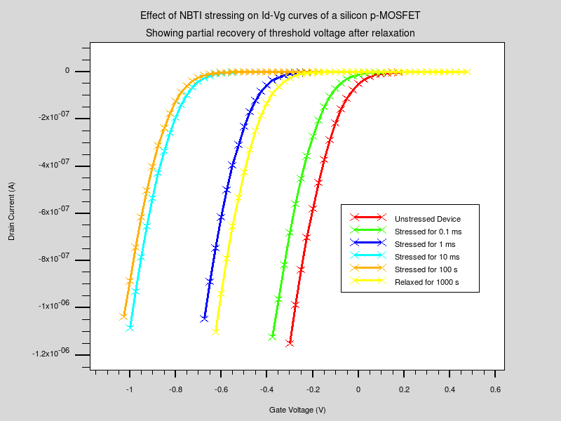
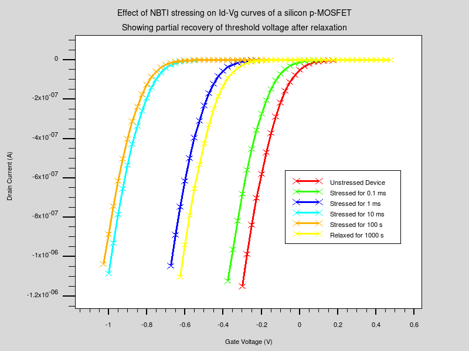
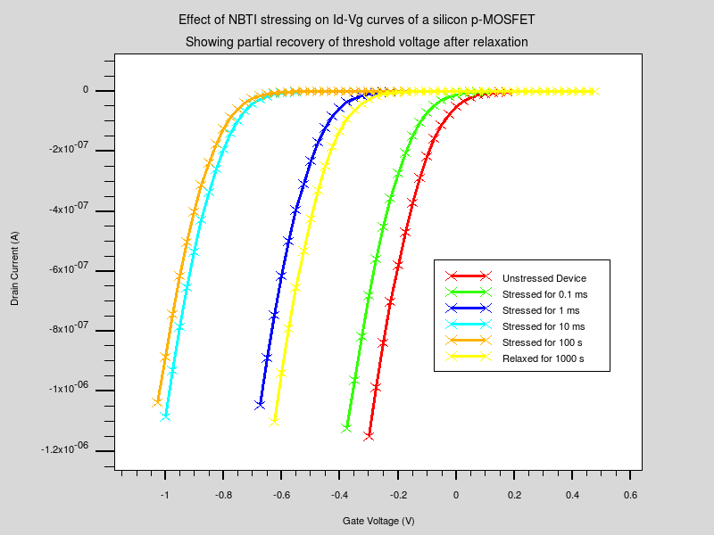

| Requires: | SSuprem 4/S-Pisces |
| Minimum Versions: | Athena 5.22.3.R, Atlas 5.26.1.R |

This example creates a pMOSFET and models the degradation
caused by stressing at negative gate bias and elevated
temperature. After relaxing the device the permanent
component of the degradation is shown. The actual size
of the degradation is enhanced compared to reality,
for the purposes of illustration. The example shows
how to :
The input file consists of four separate runs, the first starts Athena
go athena
which uses commands similar to those in mos2ex12 to create an example
pMOSFET structure. The next section starts Atlas
go atlas
and sets up the interface traps at a density of 1e12 per c.c. on the
INTTRAP statement. The particular model used is the 4-state stochastic
model GRA.4.STO. This is described in detail in the Atlas users manual.
The traps at each interface point are divided into
GRA.SAMPLES subtraps, and the parameters for each one are chosen from
a random uniform distribution, determined from the specified mean value
and variance parameters. The set of
PROBE FT.MSC MSCSTATE=n [position]
statements cause the values of the trap occupation probabilities
at the particular location on the interface be written to the log file.
The location parameters must position the probe exactly on an interface to obtain
correct values.
The traps are initialised to all be in the
precursor state, and then a transient simulation is done at negative
gate bias with the device biased to conduct. At various points the
structure file is saved, the TRAPS parameter on the OUTPUT statement
ensures that the current occupation probabilities of all the subtraps
are saved to the file. In the next section starting Atlas again
go atlas
the structure file corresponding to the device after 100 s of stressing
is read in. On a transient ramp the
the gate and drain bias are quickly reduced to zero and a transient
simulation with the device in this relaxed state is run to 1000 seconds.
The structure file is saved at the end of the run. In the final section
starting Atlas again
go atlas
the mesh is read in and the simulation flags set. The deck then loops
6 times between the statements
loop steps=6 and
l.end to read in a sequence of saved structure files and obtain the
Id-Vg characteristics of the virgin device and the degraded devices.
The degradation is partially recoverable, after 1000 s of realxation
the degradation is better than it is immediately after 100 s of
stressing. This is due to structural relaxation of some traps
back to the precursor state, whilst some remain as charged interface
(Pb) states.
To load and run this example, select the
Load button in DeckBuild > Examples. This will copy the input file and any support files to your current working directory. Select the
Run button in DeckBuild to execute the example.